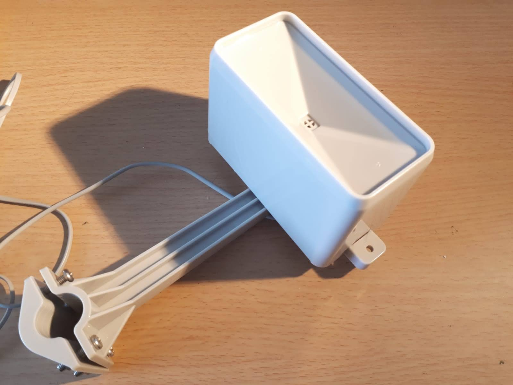
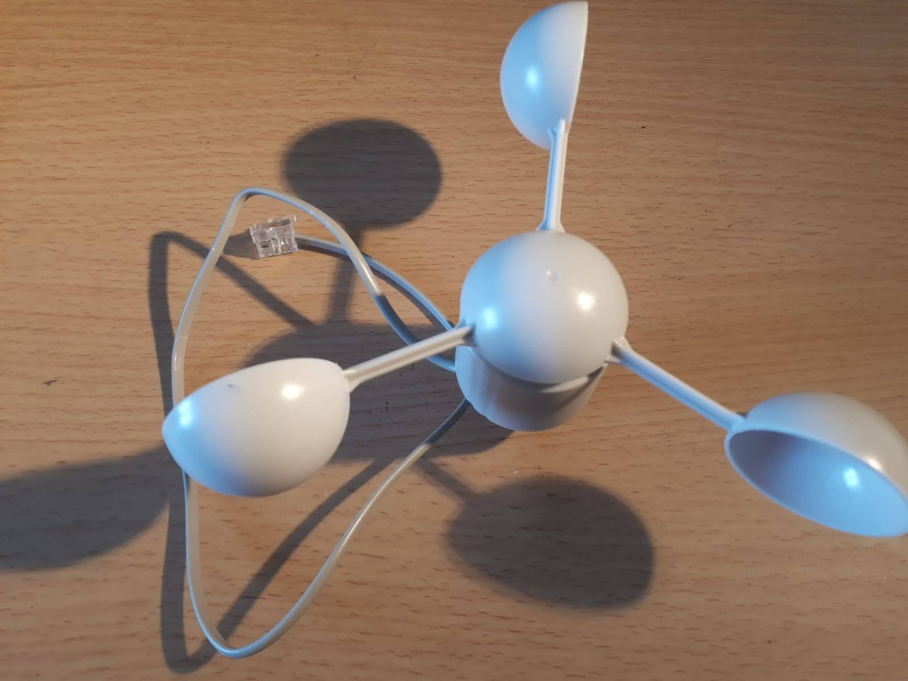
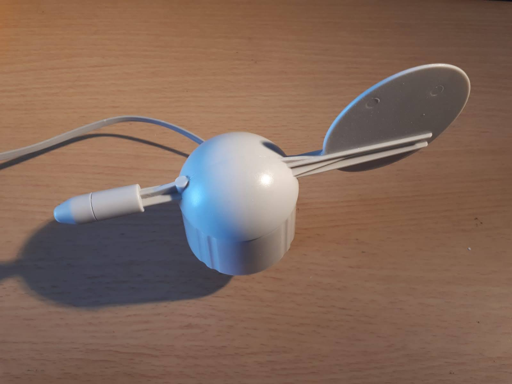
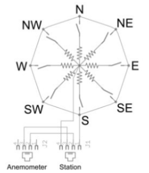

Sensoren

Temperatur- und Luftfeuchtesensor
Ist ein DHT 22- Sensor mit Temperatur und Luftfeuchtigkeit
in einem. Man kann beide Werte über ein Signalkabel
auslesen.

Regensensor
Die Niederschlagsmenge wird mithilfe eines Behälters mit
Kippfunktion bestimmt. Sobald die eine Hälfte des Gefäßes
mit Regenwasser vollgelaufen ist, wird das Wasser
ausgekippt und die andere Seite füllt sich. Per Magnet in
der Rückwand, wird bestimmt, wie oft der Behälter gekippt
wurde. Die Menge des Behälters wird ausgerechnet und mit
der Anzahl der Kippvorgänge multipliziert.

Mit einem sogenannten Anemometer kann die
Windgeschwindigkeit gemessen werden. Hierfür werden die
Umdrehungen pro Sekunde, also die Kontaktschließungen
gemessen. Ein Kontaktschluss pro Sekunde entspricht ca. 2,4
km/h
Windgeschwindigkeitssensor

Windrichtungssensor
Ist ein einfacher Windmesser, welcher mit Hilfe von einer
Art Fahne sich in Windrichtung stellt. Dabei wird mit
Hilfe von 8 verschiedenen Schaltern jeweils einer bis zwei
gleichzeitig in einem Stromkreis geschlossen. Somit können
16 verschiedene Richtungen gemessen werden. Mit einer
Spannungsteilerschaltung, kann man die jeweiligen
Widerstände herausbekommen. Diese müssen wiederum in
Gradzahlen umgerechnet werden.
